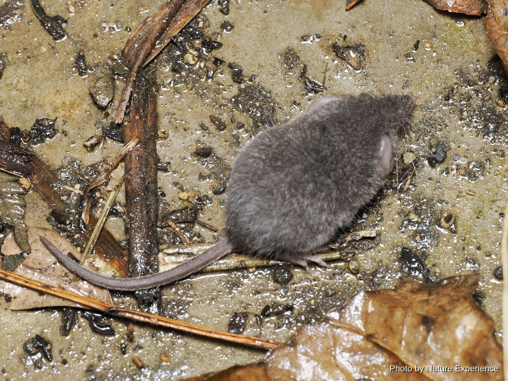

奄美黑兔
体长约41〜51厘米，体重1.3〜2.7千克。仅分布于奄美大岛和德之岛的日本固有种，因保留 了浓厚的原始特征而被称为"活化石"。1921年被指定为天然纪念物，1963年升格.

CREATURES / MAMMALS
奄美大岛的森林中栖息着奄美黑兔等只有这座岛屿才有的珍贵哺乳类，其中许多被指定为国家天然纪念物或国内稀有野生动植物种。
ABOUT
奄美大岛自与大陆分离以来经过了漫长的岁月，被称为"东方的加拉帕戈斯"，岛上残存着许多在其他地区都看不到的固有哺乳类。
走在夜晚的森林中，有时会遇见在林道上轻盈跳跃的奄美黑兔，或是在树上敏捷移动的琉球长毛鼠等夜行性哺乳类。其中不少种类警戒心较弱，即使在手电筒的灯光下也能从容地观察。
发现它们时，请保持距离，避免频繁使用闪光灯，静静地欣赏它们的身姿。
这里介绍的哺乳类中，许多被指定为国家天然纪念物或国内稀有野生动植物种，法律禁止捕获、采集及转让。即使发现了，也请不要追赶或触摸，静静地观察即可。
MAMMALS OF AMAMI
介绍在奄美大岛森林中能遇见的哺乳类。点击照片或名称即可查看该物种的详细页面。
体长约41〜51厘米，体重1.3〜2.7千克。仅分布于奄美大岛和德之岛的日本固有种，因保留 了浓厚的原始特征而被称为"活化石"。1921年被指定为天然纪念物，1963年升格.
体长22〜33厘米，尾长25〜35厘米。是日本体型最大的老鼠，仅分布于奄美大岛、德之岛及 冲绳岛北部，毛发中混有5〜6厘米的长刚毛。1972年被指定为天然纪念物，2016年.

奄美大岛的特有种，1972年被指定为国家天然纪念物。体长8.9〜16厘米。背部的毛呈棘刺状 (只是比普通毛略硬一些)。与冲绳岛、德之岛的刺鼠为不同物种。食性为杂食(椎树果实.
体长约5.5厘米，体重仅5〜8克，是世界上体型最小的哺乳动物之一。仅分布于奄美群岛(奄 美大岛、加计吕麻岛、德之岛等)和冲绳诸岛的日本固有种。喜欢草地、农田等开阔环境，以小.

EXPLORE MORE
选择一个分类，了解更多奥美大岛的生物。
NIGHT FIELD TOUR
跟着向导一起在夜间森林中寻找生物。
查看夜间旅行团详情及费用 →